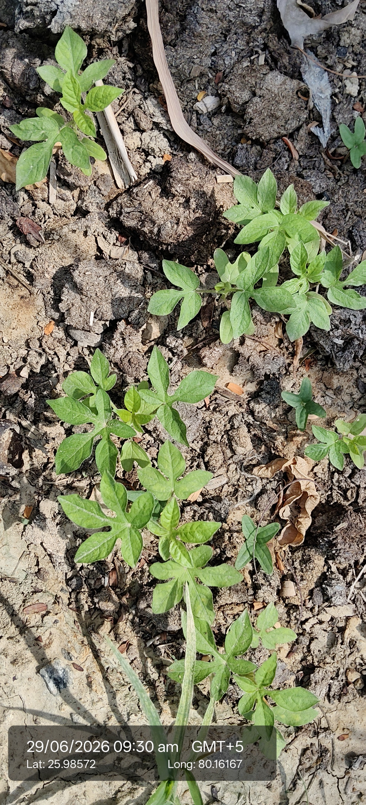

Visual record01 photographs

| Scientific name | Leonotis leonurus |
|---|---|
| Family | Lamiaceae (Mint family) |
| Type | Broadleaf evergreen shrub, semi‑woody base. |
| Category | Shrubs |
Habitat & Growing Conditions
- Height: 2–3 m tall, 1.5 m wide.
- Leaves: Lance‑shaped, aromatic when crushed.
- Flowers: Bright orange, hairy tubular flowers in whorls around square stems.
- Grasslands, rocky areas, drought‑tolerant; thrives in full sun and well‑drained soil.
Economic Importance
- Cultivated as an ornamental plant for its striking orange blossoms.
- Flowers attract sunbirds, bees, and butterflies, supporting pollinators.
- Used in traditional medicine in Africa for coughs, fever, and snake bites.
- Contains alkaloids like leonurine, studied for sedative and medicinal properties.
- Sometimes smoked as a mild psychoactive herb (folk use).
- Drought‑tolerant, useful in landscaping and soil conservation.
- Introduced to Europe in the 1600s as a garden plant.
- Flowers used in floral arrangements due to their unique whorled shape.
- Hardy plant, survives poor soils and extreme heat.
- Economically minor but culturally significant in South Africa and globally as an ornamental.
Medicinal Importance
Medicinal notes pending.
Field Notes
- Origin: Native to South Africa